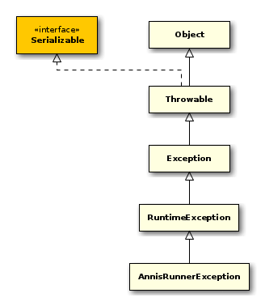
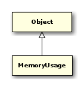

Inhaltsverzeichnis
- Paket annis
- Paket annis.administration
- Paket annis.dao
- Schnittstelle AnnisDao
- Klasse AnnotatedMatch
- Klasse AnnotatedSpan
- Schnittstelle CorpusSelectionStrategy
- Klasse CountExtractor
- Klasse DocumentNameMapRow
- Klasse ListCorpusByNameDaoHelper
- Klasse Match
- Klasse MetaDataFilter
- Klasse ResolverDaoHelper
- Schnittstelle ResultSetConverter
- Klasse ScriptFileSqlSessionModifier
- Klasse SpringAnnisDao
- Schnittstelle SqlSessionModifier
- Klasse TimeOutSqlSessionModifier
- Paket annis.ql.parser
- Klasse AnnisParser
- Klasse AnnisParser.InternalParser
- Klasse ClauseAnalysis
- Klasse DnfNodeRelNumberUpdater
- Klasse DnfTransformer
- Klasse NodeRelationNormalizer
- Klasse NodeRelationNormalizer.RelationCollector
- Klasse NodeSearchNormalizer
- Klasse QueryAnalysis
- Klasse QueryData
- Klasse QueryValidator
- Klasse SearchExpressionCounter
- Klasse TokenSearchNormalizer
- Klasse TreeDumper
- Ausnahme UnknownExpressionException
- Paket annis.service.internal
- Paket annis.sqlgen
- Klasse AbstractFromClauseGenerator
- Klasse AbstractSolutionKey
- Klasse AbstractSqlGenerator
- Klasse AbstractUnionSqlGenerator
- Klasse AbstractWhereClauseGenerator
- Schnittstelle AnnotateExtractor
- Klasse AnnotateInnerQuerySqlGenerator
- Klasse AnnotateQueryData
- Klasse AnnotateSqlGenerator
- Klasse AnnotateSqlGenerator.IslandPolicies
- Schnittstelle AnnotationConditionProvider
- Klasse AomAnnotateExtractor
- Klasse ArrayCorpusPathExtractor
- Klasse ByteHelper
- Klasse CommonLimitOffsetGenerator
- Schnittstelle CorpusPathExtractor
- Klasse CorpusPathWhereClauseGenerator
- Klasse CountSqlGenerator
- Klasse CsvCorpusPathExtractor
- Klasse DefaultTableAccessStrategy
- Klasse DefaultWhereClauseGenerator
- Klasse FindSqlGenerator
- Schnittstelle FromClauseSqlGenerator
- Schnittstelle GroupByClauseSqlGenerator
- Schnittstelle LimitOffsetClauseSqlGenerator
- Klasse LimitOffsetQueryData
- Klasse ListAnnotationsSqlHelper
- Klasse ListCorpusAnnotationsSqlHelper
- Klasse ListCorpusSqlHelper
- Klasse MatrixSqlGenerator
- Klasse MetaDataAndCorpusWhereClauseGenerator
- Klasse MultipleColumnsSolutionKey
- Klasse NodeNameAndIdPostgreSqlArraySolutionKey
- Schnittstelle NodeSqlAdapter
- Schnittstelle OrderByClauseSqlGenerator
- Klasse PostgreSqlArraySolutionKey
- Klasse SaltAnnotateExtractor
- Klasse SaltAnnotateExtractor.RankID
- Klasse SampleWhereClause
- Schnittstelle SelectClauseSqlGenerator
- Schnittstelle SolutionKey
- Klasse SqlConstraints
- Schnittstelle SqlGenerator
- Klasse SubQueryCorpusSelectionStrategy
- Klasse SubcorpusConstraintWhereClause
- Klasse SubcorpusConstraintWhereClause.IdPair
- Klasse TableAccessStrategy
- Klasse TableAccessStrategyFactory
- Klasse TableJoinsInFromClauseSqlGenerator
- Klasse TableJoinsInWhereClauseGenerator
- Ausnahme UnknownExpressionException
- Schnittstelle WhereClauseSqlGenerator
- Schnittstelle WithClauseSqlGenerator
- Paket annis.sqlgen.annopool
- Paket annis.sqlgen.fullfacts
- Paket annis.utils
- Veraltete APIs
- Statistiken
- Stichwortverzeichnis
public abstract class AnnisBaseRunner { // Public Constructors public AnnisBaseRunner();
// Public Static Methods public static String getAnnisHome();
public static Object getBean(String beanName, boolean logToConsole, String[] contextLocations);
public static AnnisBaseRunner getInstance(String beanName, boolean logToConsole, String[] contextLocations);
public static AnnisBaseRunner getInstance(String beanName, String[] contextLocations);
// Public Methods public String getHelloMessage();
public PrintStream getOut();
public String getPrompt();
public void run(String[] args);
public void setHelloMessage(String helloMessage);
public void setOut(PrintStream out);
public void setPrompt(String prompt);
}
Direkt abgeleitete Klassen: annis.AnnisRunner, annis.administration.AnnisAdminRunner, annis.service.internal.AnnisServiceRunner

public class AnnisRunner extends AnnisBaseRunner { // Public Constructors public AnnisRunner();
// Public Static Methods public static void main(String[] args);
// Public Methods public String benchmarkOptions(QueryData queryData);
public void doAnalyze(String functionCall);
public void doAnnotate(String annisQuery);
public void doAnnotations(String doListValues);
public void doBenchmark(String benchmarkCount);
public void doCorpus(String list);
public void doCount(String annisQuery);
public void doDebug(String ignore);
public void doDoc(String docCall);
public void doExplain(String functionCall, boolean analyze);
public void doFind(String annisQuery);
public void doList(String unused);
public void doMatrix(String annisQuery);
public void doMeta(String corpusId);
public void doParse(String annisQuery);
public void doPlan(String functionCall);
public void doQuit(String dummy);
public void doRecord(String dummy);
public void doSet(String callToSet);
public void doShow(String setting);
public void doSql(String functionCall);
public void doSqlDoc(String docCall);
public void doSqlText(String textID);
public void doText(String textID);
public AnnisDao getAnnisDao();
public AnnisParser getAnnisParser();
public AnnotateSqlGenerator<SaltProject> getAnnotateSqlGenerator();
public QueryAnalysis getAqlAnalysis();
public int getContext();
public List<Long> getCorpusList();
public SqlGenerator<QueryData, Integer> getCountSqlGenerator();
public SqlGenerator<QueryData, List<Match>> getFindSqlGenerator();
public int getMatchLimit();
public SqlGenerator<QueryData, List<AnnotatedMatch>> getMatrixSqlGenerator();
public MetaDataFilter getMetaDataFilter();
public QueryAnalysis getQueryAnalysis();
public void setAnnisDao(AnnisDao annisDao);
public void setAnnisParser(AnnisParser annisParser);
public void setAnnotateSqlGenerator(AnnotateSqlGenerator<SaltProject> annotateSqlGenerator);
public void setAqlAnalysis(QueryAnalysis aqlAnalysis);
public void setContext(int context);
public void setCorpusList(List<Long> corpusList);
public void setCountSqlGenerator(SqlGenerator<QueryData, Integer> countSqlGenerator);
public void setFindSqlGenerator(SqlGenerator<QueryData, List<Match>> findSqlGenerator);
public void setMatchLimit(int matchLimit);
public void setMatrixSqlGenerator(SqlGenerator<QueryData, List<AnnotatedMatch>> matrixSqlGenerator);
public void setMetaDataFilter(MetaDataFilter metaDataFilter);
public void setQueryAnalysis(QueryAnalysis queryAnalysis);
}

public static final class AnnisRunner.OS extends Enum<OS> { // Public Static Fields public static final OS linux;
public static final OS other;
// Public Static Methods public static OS valueOf(String name);
public static OS[] values();
}

Base class for errors that occur during the execution of an AnnisRunner.
public class AnnisRunnerException extends RuntimeException { // Public Constructors public AnnisRunnerException();
public AnnisRunnerException(String message);
public AnnisRunnerException(String message, Throwable cause);
public AnnisRunnerException(Throwable cause);
}
Direkt abgeleitete Klassen: annis.UsageException, annis.administration.DatabaseAccessException, annis.administration.FileAccessException
- Autor

Utility class that prints out memory usage of the Java VM to a logfile.
public class MemoryUsage { // Public Constructors public MemoryUsage();
// Public Static Methods public static void logMemoryUsage();
}
- Autor

public class TableFormatter { // Public Constructors public TableFormatter();
// Public Methods public String formatAsTable(List<?> list, String[] fields);
}